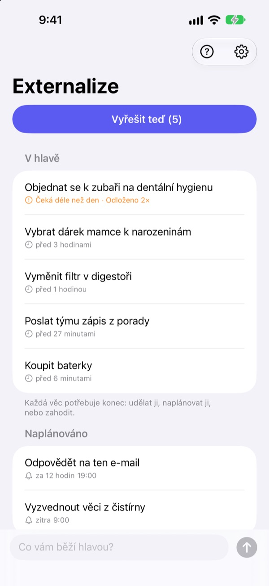
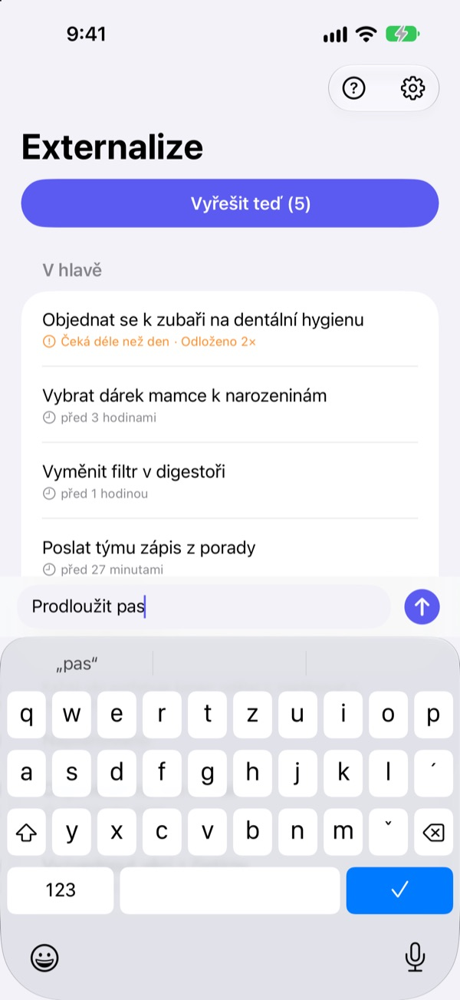
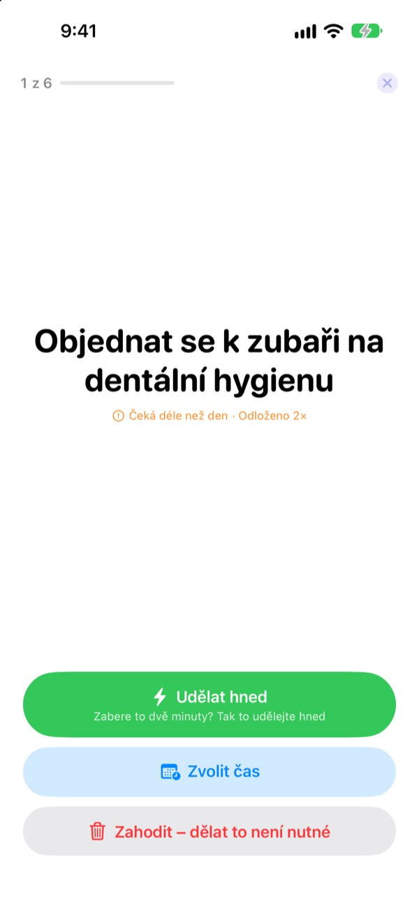
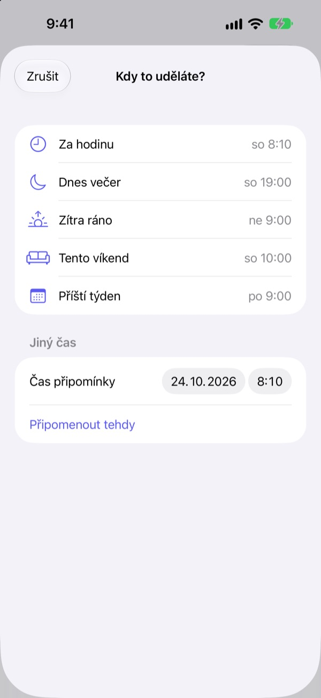

Zapiš to teď.
Vyřeš to večer.
„Jo vlastně, musím…“ Dostaň to z hlavy pár slovy a přestaň na to myslet. Večer vyřešíš, co zbylo, jednu věc po druhé.
Všechny funkce jsou zdarma. Bez účtu a přihlašování.

Vyzkoušej si to
Napiš, co ti leží v hlavě, nebo klepni na příklad. Pak stiskni „Vyřešit teď“ a dej každé věci konec.
I drobnosti zabírají v hlavě místo
Ve sprše, na červené, těsně před usnutím: „Tohle musím udělat.“ Nemáš to kam zapsat, tak si to držíš v hlavě, a to, co zrovna děláš, tím trpí. Aplikace na úkoly chtějí nejdřív seznam a termín, takže i zapsat se stává úkolem.
Tři vteřiny a pustit z hlavy
Otevři aplikaci a piš do řádku dole. Žádné seznamy, složky ani termíny.
Klepnutím na widget na zamčené obrazovce se otevře prázdný řádek. Řekni Siri Zapamatuj si v Externalize nebo to dej na tlačítko Akce a uloží se to, aniž bys aplikaci otevíral.

Večer jednu věc po druhé
Když něco zbývá, přijde jedna připomínka ve 21:00. Když nezbývá nic, ozve se nic.
Po spuštění se věci ukazují jedna po druhé, velkým písmem. Zvol „Udělat hned“, „Zvolit čas“ nebo „Zahodit“ a přijde další. Jestli to zabere dvě minuty, spusť časovač a udělej to rovnou.

Nic nezůstane hnít
Vyber „Za hodinu“, „Dnes večer“, „Zítra ráno“, „Tento víkend“ nebo „Příští týden“ a věc se vrátí přesně tehdy. V oznámení rovnou klepneš na „Hotovo“, „Zítra ráno“ nebo „Zahodit“.
Co čeká déle než den a co pořád odkládáš, je označené, takže hned vidíš, co ti stále uniká.

Začni ve třech krocích
- 1
Zapiš to
Pár slov v aplikaci, ve widgetu na zamčené obrazovce nebo přes Siri, co je zrovna po ruce.
- 2
Povol oznámení
Aplikace se zeptá jednou, když poprvé něco zapíšeš. Chodí přes ně večerní připomínka a časy, které zvolíš.
- 3
Večer to vyřeš
Klepni na připomínku nebo na „Vyřešit teď“ a dej každé věci konec.
Přímo ze seznamu
- Klepnout na položku
- vybrat „Hotovo“, „Zvolit čas“ nebo „Zahodit“
- Přejet doprava
- Hotovo (zmizí ze seznamu)
- Přejet doleva
- Zahodit, nebo „Odložit“ a zvolit čas
- Vyřešit teď
- projít, co zbývá, jednu věc po druhé
- Zapamatuj si v Externalize
- říct Siri bez otevírání aplikace
- Nastavení ▸ Večerní připomínka
- změnit čas nebo vypnout
Při volbě času znamená „Dnes večer“ 19:00, „Zítra ráno“ 9:00, „Tento víkend“ sobotu v 10:00 a „Příští týden“ pondělí v 9:00. Můžeš si také vybrat libovolné datum a čas.
Časté dotazy
Můžu něco zapsat bez otevření aplikace?
Ano. Řekni Siri Zapamatuj si v Externalize, zeptá se, co zapsat, a uloží to. V Nastavení přiřaď zkratku „Zapsat“ tlačítku Akce a stačí jedno stisknutí.
Jak přidám widget na zamčenou obrazovku?
Podrž prst na zamčené obrazovce, klepni na Přizpůsobit a vyber zamčenou obrazovku, klepni na oblast widgetů a přidej Externalize. Klepnutím se otevře prázdný řádek a widget ukazuje, kolik věcí zbývá. Na plochu je k dispozici i malý widget.
Jak změnit nebo vypnout večerní připomínku?
Klepni na ozubené kolečko vpravo nahoře ▸ Večerní připomínka a změň čas nebo ji vypni. Výchozí čas je 21:00 a ve dnech, kdy nic nezbývá, se neozve.
Nechodí mi oznámení.
Pokud nastavení Externalize hlásí, že oznámení jsou vypnutá, klepni tam na tlačítko a zapni je v Nastavení iPhonu. Ve dnech, kdy nic nezbývá, večerní připomínka nechodí, a to je v pořádku.
Jak se vrátí věc s nastaveným časem?
Ve zvolený čas přijde oznámení. Podrž ho a rovnou vyber „Hotovo“, „Zítra ráno“ nebo „Zahodit“. Když neuděláš nic, vrátí se do „V hlavě“ a vyřešíš ji příště.
Dá se vrátit věc označená jako hotová nebo zahozená?
Ne. Vyřešené věci zmizí ze seznamu a archiv neexistuje. Pokud si nejsi jistý, zvol raději čas než zahodit.
Přenesou se záznamy na nový iPhone?
Ne. Všechno zůstává jen v tomto zařízení a nikdy se neposílá do iCloudu ani na server. Když aplikaci smažeš, smažou se i záznamy.
Na jakých zařízeních funguje?
Na iPhonu se systémem iOS 17 nebo novějším.
Dotaz nebo chyba? Napiš na mizzking75@gmail.com. Když uvedeš model iPhonu a verzi iOS, podíváme se na to rychleji.